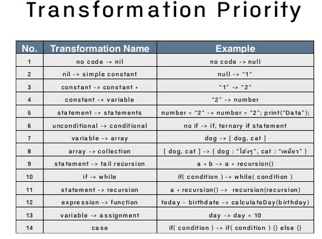

Code-Retreat
Gaspard POINTEAU
@Gaspard_PO
Fonctionnement Pratique
- 9h - 18h
- Pauses !
- Basé sur du code retreat et de la pratique
- Binomes ou Mob
- Pas obligé de finir
Code Retreat
Kata
un petit excercices de code
un échauffement, une étude, un petit entrainement
prendre le temps, sans la pression du résultat
Coding Dojo
Lieu où l'on étudie la voie du code
- Dave Thomas : katas du développeur
- Laurent Bossavit : faisons les en groupe
Global Day of Code Retreat
Un gros coding Dojo
d'une journée complète
dans le monde entier
Comment ?
- un binome
- un ordinateur
- un langage
- IDE, test runner ...
- un sujet
- des contraintes
45 minutes,
et ...
Supprimez votre code !
TDD

Red
Quel est le test à écrire pour faire la plus petite étape ?
Commencer par fail : tester le test
Green
Quel est la plus petite étape à faire pour faire passer le test ?
Refactor
On nettoie
On fait apparaître des concepts métiers

Test driven development ?
Test driven design ?
l'objectif n'est pas les tests, c'est le design !
le batterie de tests n'est qu'un effet de bord en cadeau
Focus sur le besoin !
oblige à réfléchir à ce que je veux en sortie
ce dont j'ai besoin en entrée
avant de faire la prod
Avantages
- écrit les specs en même temps que les tests
- plein de tests pour la non-regression
- oblige à définir le besoin avant de coder
- code testable == code modulaire
- YAGNI : on évite d'écrire du code inutile
- gain de temps : pas de débuggueur, ni de logs
Qualité
La qualité d'aujourd'hui est la vélocité de demain.TL; DR : 4 rules of Simple design

Kent Beck
TL; DR 2:

Les autres outils sont des indicateurs, mais en aucun cas des mesures fiables, et encore moins des objectifs.
La dette technique est un choix.
C'est un emprunt qu'il faudra rembourser, avec des intérets.
Valide pour certains projets "one shot" :
un petit script pour trier un tas de données, un spike pour essayer une techno ...
Mais la plupart du temps les one-shots sont maintenus pendant des années.
later is never
Clean-Code

Robert C. Martin aka Uncle Bob
Clean-Code
"Any fool can write code that a computer can understand. Good programmers write code that humans can understand."
Martin Fowler
"Mal nommer les choses, c'est ajouter au malheur du monde !"
Albert Camus
"There are only two hard things in Computer Science:
- cache invalidation,
- naming things" Phil Karlton
Utilisez du vocabulaire métier
public List<int[]> getFlg() {
List<int[]> list1 = new ArrayList<int[]>();
for (int[] x : theList ) {
if (x[0] == 4)
list1.add(x);
}
return list1;
}
public List<Cell> getFlaggedCells() {
List<Cell> flaggedCells = new ArrayList<Cell>();
for (Cell cell : gameBoard ) {
if (cell.isFlagged())
flaggedCells.add(cell);
}
return flaggedCells;
}
Séparez les niveaux d'abstraction
public RGBColor readCurrentColor(BlinkLed led) {
device.sendCommand(new ReadColorRequest(led));
byte[] response = device.readResponse();
int red = response[2] >= 0 ? response[2] : response[2] + 256;
int green = response[3] >= 0 ? response[3] : response[3] + 256;
int blue = response[4] >= 0 ? response[4] : response[4] + 256;
return new RGBColor(red, green, blue);
}
public RGBColor readCurrentColor(BlinkLed led) {
device.sendCommand(new ReadColorRequest(led));
byte[] response = device.readResponse();
return extractColor(response);
}
private RGBColor extractColor(byte[] response) {
int red = convertToPositiveInt(response[2]);
int green = convertToPositiveInt(response[3]);
int blue = convertToPositiveInt(response[4]);
return new RGBColor(red, green, blue);
}
private int convertToPositiveInt(byte byt) {
return byt >= 0 ? byt : byt + 256;
}
Séparez les niveaux d'abstraction
- Extract Method
- Extract Variables
- Extract Field
- Donner des noms parlants
- Une seule fonctionnalité par méthode
Commentaires

Commentaires

Inutiles ou Faux
/*
* A comment to please checkstyle
*/
/*
* Set the port
*
* @params port
*/
public void setPort(Port port) {this.port=port}
...
} /* end for */
dao.flush();
default :
break;
} /* end switch */
} /* end if */
} /* end if */
} catch ...
- Soit obsolètes et faux
- Soit redondant et inutiles
Exceptions:
- Public API
- Interface
- Les Test expliquent le Quoi
- Le Code explique le comment
Transformation Priority Premise
- ({} → nil) no code at all → code that employs nil
- (nil → constant)
- (constant → constant+) a simple constant to a more complex constant
- (constant → scalar) replacing a constant with a variable or an argument
- (statement → statements) adding more unconditional statements.
- (unconditional → if) splitting the execution path
- (scalar → array)
- (array → container)
Transformation Priority Premise
- (statement → tail-recursion)
- (if → while)
- (statement → non-tail-recursion)
- (expression → function) replacing an expression with a function or algorithm
- (variable → assignment) replacing the value of a variable.
- (case) adding a case (or else) to an existing switch or if
Transformation Priority Premise
Loi de Demeter
Pas bien !
a.getB().getC().doThings();
Bien !
a.doThings();
Injection de dépendances
Pas bien !
public class Client {
private Service service;
public Client() {
this.service = new ServiceLieAUneDatabasePrecise();
}
public String greet() {
return "Hello " + service.getName();
}
}
Bien !
public class Client {
private Service service;
public Client(Service service) {
this.service = service;
}
...
}
Des frameworks permettent de faire "facilement" de l'injection de dépendances.
A voir si la complexité et les contraintes qu'ils apportent sont compensés.
Ne jamais coupler avec des librairies externes !
Jamais
Toujours utiliser des abstractions et des façades
Smells
- Singleton
- Tight coupling
- Untestable
- Premature Optimisation
- Indescriptive naming
- Duplication
Mieux
- SOLID principles
- null -> objet "vide"
- héritage -> compositions
- if/switch -> polymorphisme
- pas de singletons
Solid
- S - Single-responsiblity principle
- O - Open-closed principle
- L - Liskov substitution principle
- I - Interface segregation principle
- D - Dependency Inversion Principle
S - Single-responsiblity principle
A class should have one and only one reason to change, meaning that a class should have only one job.
Evitez les Managers
Un manager fait un peu de tout mais mal, beaucoup de rien et embrouille tout le monde.
O - Open-closed principle
Objects or entities should be open for extension, but closed for modification.
Penser héritage
L - Liskov substitution principle
Let q(x) be a property provable about objects of x of type T. Then q(y) should be provable for objects y of type S where S is a subtype of T.
objects in a program should be replaceable with instances of their subtypes without altering the correctness of that program.
I - Interface segregation principle
A client should never be forced to implement an interface that it doesn't use or clients shouldn't be forced to depend on methods they do not use.
D - Dependency Inversion Principle
one should "depend upon abstractions, [not] concretions."
A. High level modules should not depend upon low level modules. Both should depend upon abstractions.
B. Abstractions should not depend upon details. Details should depend upon abstractions.
Game of Life


- Any live cell with fewer than two live neighbors dies, as if caused by under population.
- Any live cell with two or three live neighbors lives on to the next generation.
- Any live cell with more than three live neighbors dies, as if by overpopulation.
- Any dead cell with exactly three live neighbors becomes a live cell, as if by reproduction.

Mars Rover

- You are given the initial starting point (x,y) of a rover and the direction (N,S,E,W) it is facing.
- The rover receives a character array of commands.
- Implement commands that move the rover forward/backward (f,b).
- Implement commands that turn the rover left/right (l,r).
Bonus:
- Implement wrapping from one edge of the grid to another. (planets are spheres after all)
- Implement obstacle detection before each move to a new square. If a given sequence of commands encounters an obstacle, the rover moves up to the last possible point and reports the obstacle.
Theatre
You work for a theater, and you're working on a suggestion system for seat allocations. During the process of buying tickets, the customer is offered the best seats available in a given price range. They will be shown a diagram of the theater with all the available seats shown, and the suggested seats highlighted. The customer will be able to change to different seats if they wish. You do not need to write the code to display the theater layout with the suggested seats highlighted. You just have to write the code that decides which seats to suggest.
D'après Emily BacheOffer seats following these rules,
in this order
- do not offer any seat that is already booked by another customer
- offer adjacent seats to members of the same party
- offer seats nearer the middle of a row
- offer seats nearer the stage
A1 A2 A3 A4 A5 A6 A7
B1 B2 B3 B4 B5 B6 B7 B8
C1 C2 C3 C4 C5 C6 C7 C8 C9
D1 D2 D3 D4 D5 D6 D7 D8 D9
E1 E2 E3 E4 E5 E6 E7 E8 E9 E10
F1 F2 F3 F4 F5 F6 F7 F8 F9 F10
G1 G2 G3 G4 G5 G6 G7 G8 G9 G10